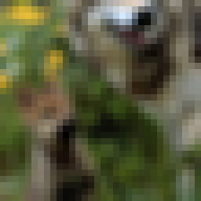
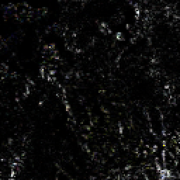
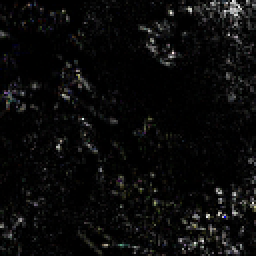
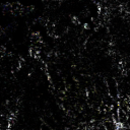
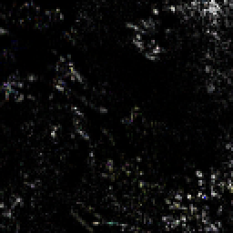

import torch
from PIL import Image
from datasets import load_dataset
from pytorch_wavelets import DTCWTForward, DTCWTInverse
from torchvision.transforms import ToPILImage, RandomCrop, PILToTensor
device="cuda"
train_dataset = load_dataset("danjacobellis/imagenet_hq", split="train")
valid_dataset = load_dataset("danjacobellis/imagenet_hq", split="validation")
def collate_fn(batch):
return torch.cat([
PILToTensor()(RandomCrop(256)(sample['image'])).unsqueeze(0) for sample in batch
])
dataloader_valid = torch.utils.data.DataLoader(
valid_dataset.select([1,7,30,33]),
batch_size=1,
num_workers=12,
drop_last=True,
shuffle=False,
collate_fn=collate_fn
)
valid_batch = next(iter(dataloader_valid))
valid_batch = valid_batch/255
valid_batch = valid_batch - 0.5
valid_batch = valid_batch.to(device)
for img in valid_batch:
display(ToPILImage()(img+0.5))
with torch.no_grad():
xfm = DTCWTForward(J=4, biort='near_sym_b', qshift='qshift_b').to(device)
X = valid_batch.clone()
Yl, Yh = xfm(X)
for img in Yl:
display(ToPILImage()(img/(2**3)+0.5).resize((256,256),resample=Image.Resampling.NEAREST))

for i_component, component in enumerate(reversed(Yh)):
print(f"compenent {i_component}")
for img in component:
for i_orientation in range(6):
real_part = img[:,i_orientation,:,:,0]
imag_part = img[:,i_orientation,:,:,1]
real_part = real_part/(2**(-i_component))
imag_part = imag_part/(2**(-i_component))
real_part = real_part.tanh()
imag_part = imag_part.tanh()
mag = real_part*real_part + imag_part*imag_part
display(ToPILImage()(mag).resize((256,256),resample=Image.Resampling.NEAREST))
compenent 0
compenent 1
compenent 2
compenent 3
 



with torch.no_grad():
ifm = DTCWTInverse(biort='near_sym_b', qshift='qshift_b').to(device)
Y = ifm((Yl, Yh))
for img in valid_batch:
display(ToPILImage()(img+0.5))